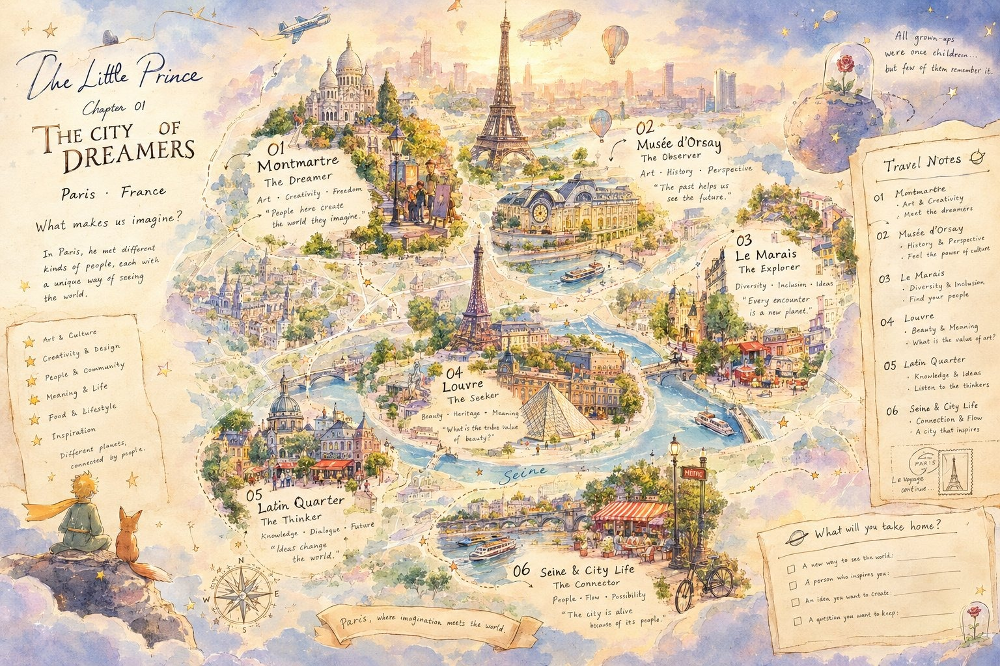
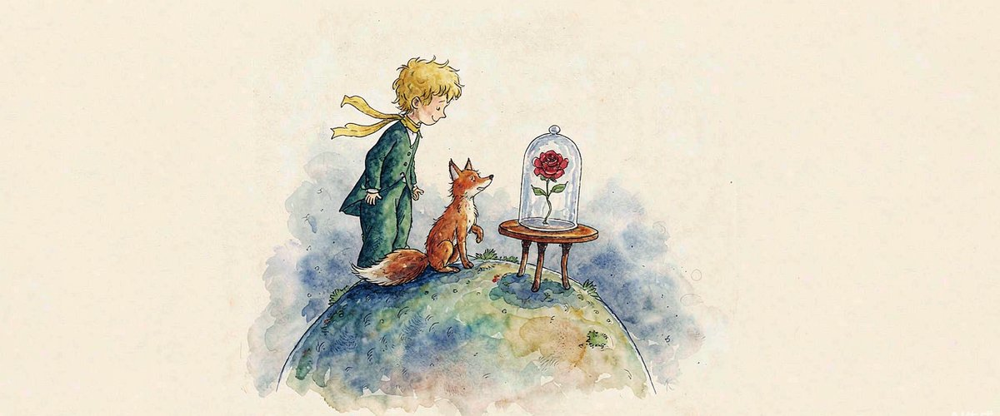

Chapter 01
THE CITY OF DREAMERS
Le Petit Prince · Voyage à Paris
小王子 · Paris 星球之旅
有些星球住着梦想家，有些住着思想者。
小王子降落在巴黎上空，在六颗星球之间，收集看世界的不同方式。
PARIS · FRANCE
What makes us imagine?


01
Montmartre · 梦想家的星球
02
Musée d'Orsay · 观察者的星球
03
Le Marais · 探索者的星球
04
Louvre · 追寻者的星球
05
Latin Quarter · 思想者的星球
06
Seine & City Life · 连接者的星球
🔍 点击地图任意位置，放大看手绘细节 · 点击金色节点，小王子会走去那颗星球

小王子、他的狐狸朋友，以及那朵被好好罩在玻璃罩里的玫瑰